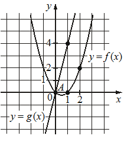

Впишите правильный ответ.
На рисунке изображены графики функций f(x)=ax2+bx+c и g(x)=kx, пересекающиеся в точках A и B. Найдите абсциссу точки B.

КЭС: 3.3 Степенная функция с натуральным и целым показателем. Её свойства и график. Свойства и график корня n-ой степени
Тип ответа: Краткий ответ
Источник ФИПИ